rm(list = ls())
options(
repr.plot.width = 6,
repr.plot.height = 6,
repr.plot.res = 150,
warn = -1
)
packages <- c(
"tidyverse", # data manipulation and ggplot2
"AER", # Applied Econometrics with R
"dynlm", # dynamic linear models (lag/diff operators)
"modelsummary", # regression tables
"stargazer", # regression tables (text output)
"xts", # time series objects
"wooldridge", # Wooldridge textbook datasets
"PoEdata", # Principles of Econometrics datasets
"urca", # unit root and cointegration tests
"tseries", # time series tools (pp.test, po.test, garch)
"CADFtest", # ADF with p-values
"forecast", # ARIMA modelling, auto.arima, forecasting
"lmtest", # coeftest
"plm" # panel linear models (Arellano-Bond section)
)
invisible(lapply(packages, function(pkg) {
if (!require(pkg, character.only = TRUE, quietly = TRUE)) {
install.packages(pkg)
require(pkg, character.only = TRUE, quietly = TRUE)
}
}))Time Series Analysis Part 2
Non-Stationarity, Cointegration, ARIMA, and Volatility
NYU - Applied Statistics and Econometrics 2
What This Notebook Covers
This notebook accompanies Time Series Part 2, covering the tools needed to handle the most common pathologies in economic and financial time series. The central problem is non-stationarity: when a series has no stable mean or variance, standard OLS inference collapses entirely, and applying OLS to trending series produces spurious regressions with high \(R^2\) and significant \(t\)-statistics that are economically meaningless.
We’ll cover:
- Three types of non-stationarity and why the correct remedy differs for each
- Unit root testing: Dickey-Fuller, ADF, Phillips-Perron, KPSS
- Spurious regression: what it looks like and why it happens
- Cointegration: when two I(1) series share a genuine long-run relationship
- ARIMA modelling from scratch: identification, estimation, diagnostics, forecasting
- Seasonal ARIMA (SARIMA) using the classic AirPassengers dataset
- Bonus: Arellano-Bond dynamic panel GMM
1 Setup
2 Non-Stationarity and Unit Roots
2.1 Motivating Example: GDP and Inflation
Before examining interest rates, consider two core macroeconomic series from the usa dataset: real GDP and inflation (change in CPI). Both are textbook examples of I(1) processes — they wander without a stable mean, but their first differences are stationary.
data("usa")
usa.ts <- ts(usa, start = c(1984, 1), end = c(2009, 4), frequency = 4)
# Build first differences
Dgdp <- diff(usa.ts[, "gdp"])
Dinf <- diff(usa.ts[, "inf"])
Df <- diff(usa.ts[, "f"])
Db <- diff(usa.ts[, "b"])
usa.ts.df <- ts.union(
gdp = usa.ts[, "gdp"],
inf = usa.ts[, "inf"],
f = usa.ts[, "f"],
b = usa.ts[, "b"],
Dgdp, Dinf, Df, Db,
dframe = TRUE
)
options(repr.plot.width = 10, repr.plot.height = 8, repr.plot.res = 150)
par(mfrow = c(2, 2))
plot(usa.ts.df$gdp, main = "GDP")
plot(usa.ts.df$Dgdp, main = "GDP: First Difference")
plot(usa.ts.df$inf, main = "Inflation (Change in CPI)")
plot(usa.ts.df$Dinf, main = "Inflation: First Difference")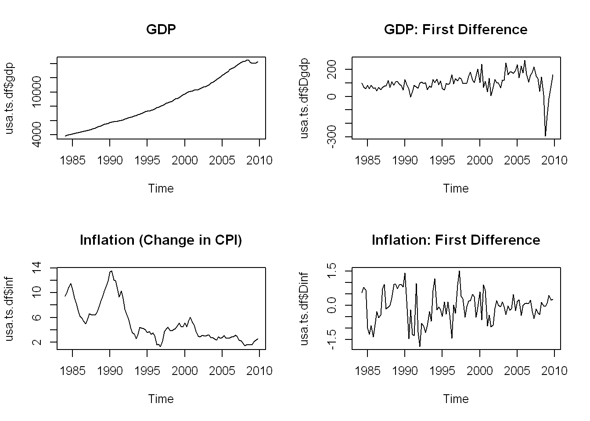
What to notice: Both GDP and inflation drift persistently over time with no tendency to revert to a fixed mean — the hallmark of a non-stationary, I(1) process. Once we take first differences, however, both series fluctuate around a stable mean: \(\Delta\text{GDP}_t\) and \(\Delta\Delta\text{CPI}_t\) are visually consistent with stationarity. This is the core motivation for unit root testing and the Box-Jenkins approach to ARIMA modelling — work in differences, not levels.
2.2 Reference Dataset: US Interest Rates
We use quarterly US interest rate data from 1960 Q1 through 2008 Q1. The dataset is loaded directly from the UTM server — no package dependency required.
# Load directly from UTM — no package dependency
quarterly_raw <- read.table(
"https://mcs.utm.utoronto.ca/~nosedal/data/quarterly.txt",
header = TRUE, sep = "\t", na.strings = "na"
)
# Convert to quarterly ts object: 1960 Q1 – 2008 Q2
data.ts <- ts(quarterly_raw[, -1], # drop the Date column
start = c(1960, 1), frequency = 4)
# Key series used throughout this notebook
# Note: 2008 Q2 has NAs for all interest rate columns — drop with na.omit / window
tbill <- na.omit(data.ts[, "Tbill"]) # 3-month T-bill rate (% p.a.), 1960Q1–2008Q1
ffr <- na.omit(data.ts[, "ffr"]) # Federal Funds rate
r3 <- na.omit(data.ts[, "r3"]) # 3-year Treasury note
r10 <- na.omit(data.ts[, "r10"]) # 10-year Treasury bond
cat("Dimensions:", nrow(quarterly_raw), "quarters x", ncol(quarterly_raw) - 1, "series\n")Dimensions: 194 quarters x 15 seriesPlot all four interest rate series together:
options(repr.plot.width = 6, repr.plot.height = 6, repr.plot.res = 150)
plot(merge(as.zoo(tbill), as.zoo(r3), as.zoo(r10)),
plot.type = "single",
col = c("black", "red", "steelblue"),
lwd = c(1, 1, 1),
lty = c(1, 1, 1),
xlab = "Date",
ylab = "Percent per annum",
main = "Interest Rates")
legend("topright",
legend = c("3M Tbill", "3Yr Note", "10yr Note"),
col = c("black", "red", "steelblue"),
lwd = c(1, 1, 1),
lty = c(1, 1, 1))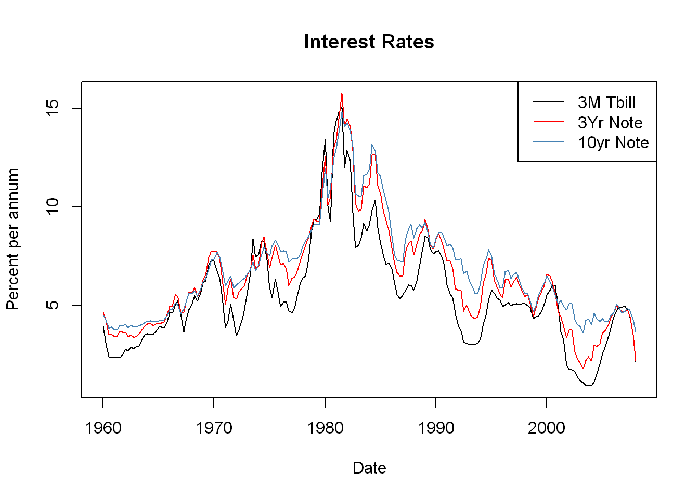
What to notice: All three rates trend upward through the 1970s–early 1980s and then trend downward, with no return to a stable mean over the full sample — a signature of non-stationarity. Their shared co-movement will motivate the cointegration analysis in Section 3.
2.3 Three Types of Non-Stationarity
The lecture distinguishes three data-generating processes that all have a unit root but require different fixes:
| Type | DGP | Fix |
|---|---|---|
| Random walk | \(y_t = y_{t-1} + \varepsilon_t\) | First difference |
| Random walk with drift | \(y_t = \mu + y_{t-1} + \varepsilon_t\) | First difference |
| Deterministic trend | \(y_t = \mu + bt + \varepsilon_t\) | Detrend |
Key asymmetry: Applying first-differencing to a trend-stationary series introduces a spurious MA(1) component (over-differencing). Detrending a random walk leaves the stochastic trend intact — the residuals are still non-stationary.
N <- 500
rho <- 0.7
a <- 1
l <- 0.01
set.seed(246810)
v <- ts(rnorm(N, 0, 1))
par(mfrow = c(2,3))
# 1. Stationary about zero
y <- ts(rep(0, N))
for (t in 2:N) y[t] <- rho * y[t - 1] + v[t]
plot(y, type = "l", main = c("Stationary about zero:", "y[t] = 0.7*y[t-1] + v[t]"))
abline(h = 0)
# 2. Stationary about non-zero mean
y <- ts(rep(0, N))
for (t in 2:N) y[t] <- a + rho * y[t - 1] + v[t]
plot(y, type = "l", main = c("Stationary about non-zero:", "y[t] = 1 + 0.7*y[t-1] + v[t]"))
abline(h = 0)
# 3. Stationary about deterministic trend
y <- ts(rep(0, N))
for (t in 2:N) y[t] <- a + l * time(y)[t] + rho * y[t - 1] + v[t]
plot(y, type = "l", main = c("Stationary about deterministic trend:", "y[t] = 1 + t + 0.7*y[t-1] + v[t]"))
abline(h = 0)
# 4. Random walk
y <- ts(rep(0, N))
for (t in 2:N) y[t] <- y[t - 1] + v[t]
plot(y, type = "l", main = c("Random walk:", "y[t] = y[t-1] + v[t]"))
abline(h = 0)
# 5. Random walk with drift
y <- ts(rep(0, N))
for (t in 2:N) y[t] <- 0.1 + y[t - 1] + v[t]
plot(y, type = "l", main = c("Random walk with drift:", "y[t] = 0.1 + y[t-1] + v[t]"))
abline(h = 0)
# 6. Random walk about deterministic trend
y <- ts(rep(0, N))
for (t in 2:N) y[t] <- 0.1 + l * time(y)[t] + y[t - 1] + v[t]
plot(y, type = "l", main = c("Random walk about deterministic trend:", "y[t] = 0.1 + t + y[t-1] + v[t]"))
abline(h = 0)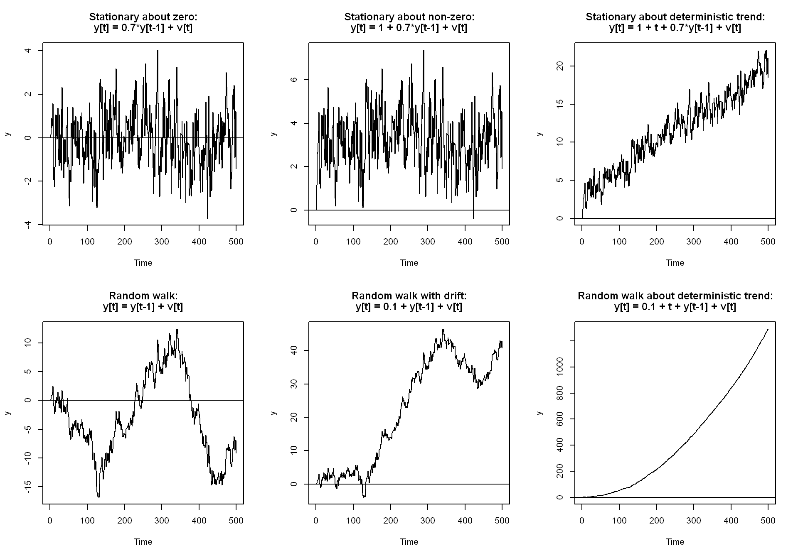
par(mfrow = c(1, 1))Note the similarity between the deterministic trend stationary process (top-right) and segments of the random walk (middle-left). Because shocks accumulate without bound in the random walk, the series exhibits long pseudo-trends — this is why we call them processes with a “stochastic trend.”
2.4 The Augmented Dickey-Fuller Test
2.4.1 Setup
The DF test reparameterises the AR(1) as:
\[\Delta Y_t = \beta_0 + \delta Y_{t-1} + u_t, \qquad \delta \equiv \phi - 1\]
Test: \(H_0: \delta = 0\) (unit root) vs. \(H_1: \delta < 0\) (stationary). The ADF augments with lagged differences to absorb any higher-order serial correlation:
\[\Delta Y_t = \beta_0 + \delta Y_{t-1} + \gamma_1 \Delta Y_{t-1} + \cdots + \gamma_p \Delta Y_{t-p} + u_t\]
Critical values are non-standard (biased left relative to \(t\) distribution) and must be obtained by simulation.
We work with the 3-month T-bill rate (tbill) as our reference series — the same series used in the lecture.
test.ts <- tbill
options(repr.plot.width = 6, repr.plot.height = 6, repr.plot.res = 150)
par(mfrow = c(1, 1))
plot(test.ts, col = "black", lwd = 2,
ylab = "%",
xlab = "Date",
main = "TBill Rate")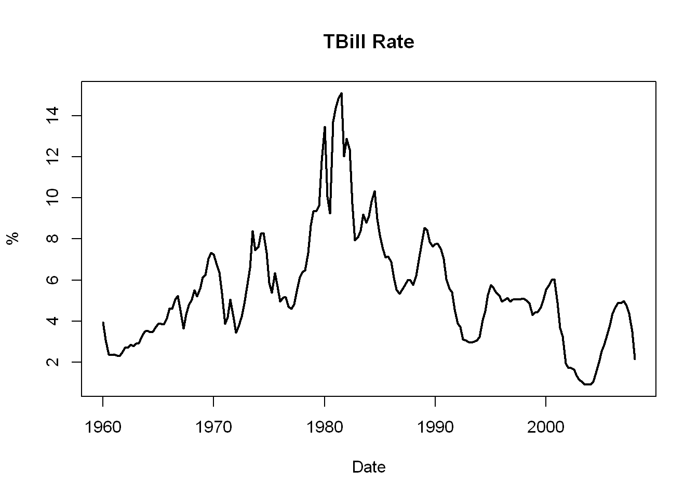
options(repr.plot.width = 6, repr.plot.height = 6, repr.plot.res = 150)
par(mfrow = c(1, 1))
acf(test.ts, main = "Sample Autocorrelation for Tbill Data")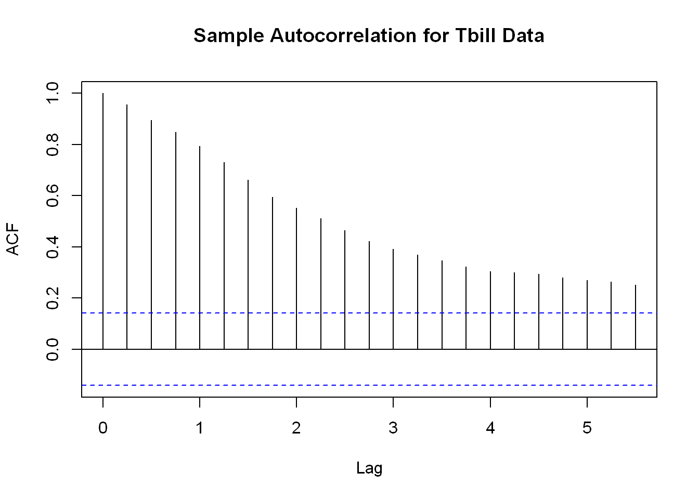
par(mfrow = c(1, 1))
pacf(test.ts, main = "Sample Partial Autocorrelation for Tbill Data")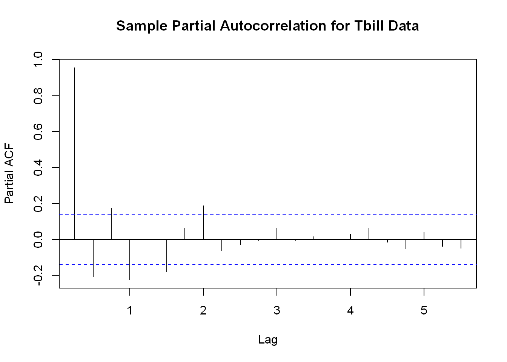
The ACF decays very slowly and barely reaches zero — a textbook signature of a near-unit-root process. The PACF has a large spike at lag 1 with rapid decay, consistent with an AR(1) or unit root.
2.4.2 Handrolled ADF
We start with 8 lags and drop down, stopping when the last lag remains significant. The procedure is top-down: start large, drop insignificant lags from the top.
# 8-lag ADF (handrolled via dynlm)
coeftest(
dynlm(diff(test.ts) ~ L(test.ts)
+ diff(L(test.ts)) + diff(L(test.ts), 2)
+ diff(L(test.ts), 3) + diff(L(test.ts), 4) + diff(L(test.ts), 5)
+ diff(L(test.ts), 6) + diff(L(test.ts), 7) + diff(L(test.ts), 8))
)
t test of coefficients:
Estimate Std. Error t value Pr(>|t|)
(Intercept) 0.244085 0.125971 1.9376 0.054288 .
L(test.ts) -0.044002 0.020569 -2.1392 0.033811 *
diff(L(test.ts)) 0.743143 0.126509 5.8742 2.110e-08 ***
diff(L(test.ts), 2) -0.711943 0.137778 -5.1673 6.459e-07 ***
diff(L(test.ts), 3) 0.482626 0.147005 3.2831 0.001241 **
diff(L(test.ts), 4) -0.279216 0.150062 -1.8607 0.064478 .
diff(L(test.ts), 5) 0.224752 0.147177 1.5271 0.128555
diff(L(test.ts), 6) 0.178066 0.137827 1.2920 0.198087
diff(L(test.ts), 7) -0.310144 0.126648 -2.4489 0.015323 *
diff(L(test.ts), 8) 0.084353 0.076126 1.1081 0.269358
---
Signif. codes: 0 '***' 0.001 '**' 0.01 '*' 0.05 '.' 0.1 ' ' 1Eighth lag is insignificant — drop to 7:
coeftest(
dynlm(diff(test.ts) ~ L(test.ts)
+ diff(L(test.ts)) + diff(L(test.ts), 2)
+ diff(L(test.ts), 3) + diff(L(test.ts), 4) + diff(L(test.ts), 5)
+ diff(L(test.ts), 6) + diff(L(test.ts), 7))
)
t test of coefficients:
Estimate Std. Error t value Pr(>|t|)
(Intercept) 0.222370 0.123941 1.7942 0.0745029 .
L(test.ts) -0.040257 0.020237 -1.9892 0.0482254 *
diff(L(test.ts)) 0.732722 0.125902 5.8198 2.730e-08 ***
diff(L(test.ts), 2) -0.735691 0.135804 -5.4173 1.966e-07 ***
diff(L(test.ts), 3) 0.509241 0.144702 3.5192 0.0005509 ***
diff(L(test.ts), 4) -0.321408 0.144838 -2.2191 0.0277595 *
diff(L(test.ts), 5) 0.286061 0.135813 2.1063 0.0365969 *
diff(L(test.ts), 6) 0.116780 0.126025 0.9266 0.3553821
diff(L(test.ts), 7) -0.196200 0.074512 -2.6331 0.0092128 **
---
Signif. codes: 0 '***' 0.001 '**' 0.01 '*' 0.05 '.' 0.1 ' ' 1The coefficient on L(test.ts) (\(\hat{\delta}\)) is small and negative. However, OLS \(t\)-statistics are invalid under the null of a unit root — we must use the Dickey-Fuller critical values.
2.4.3 ADF with urca
summary(ur.df(test.ts,
type = "drift", # include intercept, no trend
lags = 7,
selectlags = "Fixed"))
###############################################
# Augmented Dickey-Fuller Test Unit Root Test #
###############################################
Test regression drift
Call:
lm(formula = z.diff ~ z.lag.1 + 1 + z.diff.lag)
Residuals:
Min 1Q Median 3Q Max
-2.9691 -0.2679 0.0245 0.2810 3.4479
Coefficients:
Estimate Std. Error t value Pr(>|t|)
(Intercept) 0.22237 0.12394 1.794 0.07450 .
z.lag.1 -0.04026 0.02024 -1.989 0.04823 *
z.diff.lag1 0.39150 0.07332 5.340 2.85e-07 ***
z.diff.lag2 -0.34122 0.07862 -4.340 2.40e-05 ***
z.diff.lag3 0.39447 0.08173 4.826 3.00e-06 ***
z.diff.lag4 -0.11477 0.08624 -1.331 0.18500
z.diff.lag5 0.20664 0.08249 2.505 0.01315 *
z.diff.lag6 -0.07942 0.07872 -1.009 0.31441
z.diff.lag7 -0.19620 0.07451 -2.633 0.00921 **
---
Signif. codes: 0 '***' 0.001 '**' 0.01 '*' 0.05 '.' 0.1 ' ' 1
Residual standard error: 0.6707 on 176 degrees of freedom
Multiple R-squared: 0.289, Adjusted R-squared: 0.2567
F-statistic: 8.941 on 8 and 176 DF, p-value: 2.946e-10
Value of test-statistic is: -1.9892 1.9815
Critical values for test statistics:
1pct 5pct 10pct
tau2 -3.46 -2.88 -2.57
phi1 6.52 4.63 3.81The test-statistic must be compared to the DF critical values reported (tau2), not to ±1.96. A test statistic less negative than the 5% critical value (-2.88) means we fail to reject the null of a unit root.
2.4.4 ADF with CADFtest (provides p-values)
# Fixed 7 lags, matching handrolled result above
CADFtest(test.ts, max.lag.y = 7, type = "drift")
ADF test
data: test.ts
ADF(7) = -1.9892, p-value = 0.2915
alternative hypothesis: true delta is less than 0
sample estimates:
delta
-0.04025687 # BIC-selected lag length as a cross-check
summary(CADFtest(test.ts, max.lag.y = 10, criterion = "BIC", type = "drift"))Augmented DF test
ADF test
t-test statistic: -1.9958400
p-value: 0.2885655
Max lag of the diff. dependent variable: 7.0000000
Call:
dynlm(formula = formula(model), start = obs.1, end = obs.T)
Residuals:
Min 1Q Median 3Q Max
-2.9665 -0.2646 0.0241 0.2892 3.4531
Coefficients:
Estimate Std. Error t value Pr(>|t|)
(Intercept) 0.22924 0.12689 1.807 0.07256 .
L(y, 1) -0.04109 0.02059 -1.996 0.28857
L(d(y), 1) 0.39243 0.07392 5.309 3.35e-07 ***
L(d(y), 2) -0.34013 0.07933 -4.288 2.99e-05 ***
L(d(y), 3) 0.39449 0.08238 4.789 3.59e-06 ***
L(d(y), 4) -0.11378 0.08695 -1.309 0.19242
L(d(y), 5) 0.20620 0.08314 2.480 0.01409 *
L(d(y), 6) -0.07897 0.07943 -0.994 0.32149
L(d(y), 7) -0.19907 0.07530 -2.644 0.00896 **
---
Signif. codes: 0 '***' 0.001 '**' 0.01 '*' 0.05 '.' 0.1 ' ' 1
Residual standard error: 0.6759 on 173 degrees of freedom
Multiple R-squared: 0.2896, Adjusted R-squared: 0.2568
F-statistic: 9.403 on 7 and 173 DF, p-value: 7.314e-10The p-value from CADFtest confirms: we cannot reject the null of a unit root at standard significance levels. The T-bill rate is I(1).
Now verify the first difference is stationary:
CADFtest(diff(test.ts), max.lag.y = 8, criterion = "BIC", type = "drift")
ADF test
data: diff(test.ts)
ADF(6) = -5.915, p-value = 6.261e-07
alternative hypothesis: true delta is less than 0
sample estimates:
delta
-0.874118 The first difference strongly rejects the null — \(\Delta \text{tbill}_t\) is I(0). The series is integrated of order 1.
2.5 Other Unit Root Tests
# Phillips-Perron (non-parametric correction for serial correlation)
pp.test(test.ts)
Phillips-Perron Unit Root Test
data: test.ts
Dickey-Fuller Z(alpha) = -10.2, Truncation lag parameter = 4, p-value =
0.5328
alternative hypothesis: stationary# KPSS — null is STATIONARITY (reversed logic!)
summary(ur.kpss(test.ts, type = "mu", lags = "short"))
#######################
# KPSS Unit Root Test #
#######################
Test is of type: mu with 4 lags.
Value of test-statistic is: 0.6802
Critical value for a significance level of:
10pct 5pct 2.5pct 1pct
critical values 0.347 0.463 0.574 0.739# Elliott-Rothenberg-Stock DF-GLS (higher power)
summary(ur.ers(test.ts, model = "constant"))
###############################################
# Elliot, Rothenberg and Stock Unit Root Test #
###############################################
Test of type DF-GLS
detrending of series with intercept
Call:
lm(formula = dfgls.form, data = data.dfgls)
Residuals:
Min 1Q Median 3Q Max
-3.1051 -0.1811 0.0316 0.3321 3.5371
Coefficients:
Estimate Std. Error t value Pr(>|t|)
yd.lag -0.03763 0.01749 -2.151 0.0328 *
yd.diff.lag1 0.37786 0.07342 5.146 6.81e-07 ***
yd.diff.lag2 -0.30539 0.07611 -4.012 8.75e-05 ***
yd.diff.lag3 0.30440 0.07512 4.052 7.49e-05 ***
yd.diff.lag4 -0.05460 0.07428 -0.735 0.4632
---
Signif. codes: 0 '***' 0.001 '**' 0.01 '*' 0.05 '.' 0.1 ' ' 1
Residual standard error: 0.7011 on 183 degrees of freedom
Multiple R-squared: 0.1923, Adjusted R-squared: 0.1702
F-statistic: 8.713 on 5 and 183 DF, p-value: 1.981e-07
Value of test-statistic is: -2.1512
Critical values of DF-GLS are:
1pct 5pct 10pct
critical values -2.58 -1.94 -1.62Note on KPSS: Unlike ADF/PP, the null hypothesis of KPSS is stationarity. A test statistic that exceeds the critical value leads us to reject stationarity. Use it as a complement to ADF rather than a replacement.
2.6 Reporting Unit Root Tests
When reporting results, include multiple series and specifications in a compact table — as in the lecture slides.
# ADF on levels and first differences for the three interest rate series
adf_results <- list(
tbill = CADFtest(tbill, max.lag.y = 7, criterion = "BIC", type = "drift"),
Dtbill = CADFtest(diff(tbill), max.lag.y = 7, criterion = "BIC", type = "drift"),
r3 = CADFtest(r3, max.lag.y = 7, criterion = "BIC", type = "drift"),
Dr3 = CADFtest(diff(r3), max.lag.y = 7, criterion = "BIC", type = "drift"),
r10 = CADFtest(r10, max.lag.y = 7, criterion = "BIC", type = "drift"),
Dr10 = CADFtest(diff(r10), max.lag.y = 7, criterion = "BIC", type = "drift")
)
tbl <- data.frame(
Variable = c("T-bill (3m)", "ΔT-bill", "T-note (3y)", "ΔT-note",
"T-bond (10y)", "ΔT-bond"),
Det_terms = rep(c("constant", "constant"), 3),
Lags = sapply(adf_results, function(x) x$max.lag.y),
Test_stat = round(sapply(adf_results, function(x) x$statistic), 3),
p_value = round(sapply(adf_results, function(x) x$p.value), 3),
Conclusion = rep(c("Unit root", "Stationary"), 3)
)
knitr::kable(tbl,
col.names = c("Variable", "Det. terms", "Lags*",
"ADF stat", "p-value", "Conclusion"),
caption = "ADF Unit Root Test Results (H₀: series has a unit root). * Selected by BIC.")| Variable | Det. terms | Lags* | ADF stat | p-value | Conclusion | |
|---|---|---|---|---|---|---|
| tbill | T-bill (3m) | constant | 7 | -1.989 | 0.291 | Unit root |
| Dtbill | ΔT-bill | constant | 6 | -5.924 | 0.000 | Stationary |
| r3 | T-note (3y) | constant | 3 | -1.982 | 0.295 | Unit root |
| Dr3 | ΔT-note | constant | 2 | -6.206 | 0.000 | Stationary |
| r10 | T-bond (10y) | constant | 1 | -1.667 | 0.446 | Unit root |
| Dr10 | ΔT-bond | constant | 0 | -10.470 | 0.000 | Stationary |
3 OLS with Non-Stationary Data
3.1 Housing Investment vs. Prices
The Wooldridge dataset hseinv contains annual US data on real housing investment per capita and a housing price index.
data("hseinv", package = "wooldridge")
tsdata <- ts(hseinv, start = 1947)
options(repr.plot.width = 4, repr.plot.height = 4, repr.plot.res = 150)
par(mfrow = c(1, 2))
plot(tsdata[, "price"], main = "Real Housing Price Index",
xlab = "Year", ylab = "Index (1982 = 1)")
plot(tsdata[, "invpc"], main = "Real Housing Investment Per Capita",
xlab = "Year", ylab = "$1,000 / capita")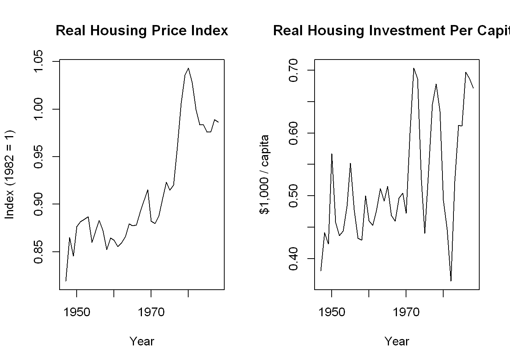
par(mfrow = c(1, 1))Both series are trending. Let’s first run the naive regression.
3.1.1 Naive regression (potentially spurious)
mdl1 <- dynlm(log(invpc) ~ log(price), data = tsdata)
stargazer(mdl1, type = "text",
title = "Naive Regression: log(invpc) on log(price)")
Naive Regression: log(invpc) on log(price)
===============================================
Dependent variable:
---------------------------
log(invpc)
-----------------------------------------------
log(price) 1.241***
(0.382)
Constant -0.550***
(0.043)
-----------------------------------------------
Observations 42
R2 0.208
Adjusted R2 0.189
Residual Std. Error 0.155 (df = 40)
F Statistic 10.530*** (df = 1; 40)
===============================================
Note: *p<0.1; **p<0.05; ***p<0.01High \(R^2\), significant price coefficient. But are both series I(1)?
3.1.2 Stationarity test
pp.test(log(tsdata[, "price"]))
Phillips-Perron Unit Root Test
data: log(tsdata[, "price"])
Dickey-Fuller Z(alpha) = -9.9053, Truncation lag parameter = 3, p-value
= 0.5079
alternative hypothesis: stationarypp.test(log(tsdata[, "invpc"]))
Phillips-Perron Unit Root Test
data: log(tsdata[, "invpc"])
Dickey-Fuller Z(alpha) = -20.572, Truncation lag parameter = 3, p-value
= 0.03473
alternative hypothesis: stationarylog(price) has a high p-value → fail to reject unit root → I(1). log(invpc) borderline, but let’s check further with ADF:
CADFtest(log(tsdata[, "price"]), max.lag.y = 4, criterion = "BIC", type = "trend")
ADF test
data: log(tsdata[, "price"])
ADF(1) = -2.7185, p-value = 0.2354
alternative hypothesis: true delta is less than 0
sample estimates:
delta
-0.2182761 CADFtest(log(tsdata[, "invpc"]), max.lag.y = 4, criterion = "BIC", type = "trend")
ADF test
data: log(tsdata[, "invpc"])
ADF(1) = -4.7735, p-value = 0.002447
alternative hypothesis: true delta is less than 0
sample estimates:
delta
-0.689245 Conclusion
log(price): clearly non-stationary (I(1)) log(invpc): evidence suggests trend-stationary (not I(1)), rather than a unit root process
Since log(price) is non-stationary, regressing it in levels on another series risks spurious regression.
3.1.3 Trend-stationary model
Add a time trend to capture common trending behaviour:
mdl2 <- dynlm(log(invpc) ~ log(price) + trend(tsdata), data = tsdata)
stargazer(mdl2, type = "text",
title = "Trend-Stationary: log(invpc) on log(price) + trend")
Trend-Stationary: log(invpc) on log(price) + trend
===============================================
Dependent variable:
---------------------------
log(invpc)
-----------------------------------------------
log(price) -0.381
(0.679)
trend(tsdata) 0.010***
(0.004)
Constant -0.913***
(0.136)
-----------------------------------------------
Observations 42
R2 0.341
Adjusted R2 0.307
Residual Std. Error 0.144 (df = 39)
F Statistic 10.080*** (df = 2; 39)
===============================================
Note: *p<0.1; **p<0.05; ***p<0.01The story reverses: price elasticity is now negative and statistically insignificant. The significant time trend captures the common upward movement in both series that was previously being attributed to prices.
3.1.4 R² with trending variables
Standard \(R^2\) is inflated when both variables trend. We can correct by first detrending the dependent variable:
# Detrend log(invpc) first, then regress on log(price) + trend
mdl_detrend_y <- dynlm(log(invpc) ~ trend(tsdata), data = tsdata)
log_invpc_dt <- residuals(mdl_detrend_y)
mdl_detrended_r2 <- dynlm(log_invpc_dt ~ log(price) + trend(tsdata), data = tsdata)
stargazer(mdl2, mdl_detrended_r2, type = "text",
title = "Comparing R² with and without pre-detrending")
Comparing R² with and without pre-detrending
==========================================================
Dependent variable:
----------------------------
log(invpc) log_invpc_dt
(1) (2)
----------------------------------------------------------
log(price) -0.381 -0.381
(0.679) (0.679)
trend(tsdata) 0.010*** 0.002
(0.004) (0.004)
Constant -0.913*** -0.072
(0.136) (0.136)
----------------------------------------------------------
Observations 42 42
R2 0.341 0.008
Adjusted R2 0.307 -0.043
Residual Std. Error (df = 39) 0.144 0.144
F Statistic (df = 2; 39) 10.080*** 0.157
==========================================================
Note: *p<0.1; **p<0.05; ***p<0.01The detrended \(R^2\) collapses from 34.1% to under 1%, and the adjusted \(R^2\) is negative. Price changes around trend explain virtually nothing about investment changes around trend.
3.1.5 Difference-stationary model
If the series are I(1), first differencing is the appropriate fix under the stochastic trend assumption:
mdl3 <- dynlm(diff(log(invpc)) ~ diff(log(price)), data = tsdata)
stargazer(mdl1, mdl2, mdl3, type = "text",
title = "Three Specifications: Housing Investment vs. Prices")
Three Specifications: Housing Investment vs. Prices
====================================================================================
Dependent variable:
----------------------------------------------------------------
log(invpc) diff(log(invpc))
(1) (2) (3)
------------------------------------------------------------------------------------
log(price) 1.241*** -0.381
(0.382) (0.679)
trend(tsdata) 0.010***
(0.004)
diff(log(price)) 1.565
(1.123)
Constant -0.550*** -0.913*** 0.007
(0.043) (0.136) (0.023)
------------------------------------------------------------------------------------
Observations 42 42 41
R2 0.208 0.341 0.047
Adjusted R2 0.189 0.307 0.023
Residual Std. Error 0.155 (df = 40) 0.144 (df = 39) 0.142 (df = 39)
F Statistic 10.530*** (df = 1; 40) 10.080*** (df = 2; 39) 1.944 (df = 1; 39)
====================================================================================
Note: *p<0.1; **p<0.05; ***p<0.01Both specifications agree that once we account for the common trend (whether deterministic or stochastic), there is no statistically significant relationship between housing prices and investment.
3.2 Spurious Regression Simulation
To drive home the danger, we simulate two completely independent random walk processes and regress one on the other.
T <- 1000
set.seed(321)
vy <- ts(rnorm(T)); y <- ts(rep(0, T))
for (t in 2:T) y[t] <- 0.2 + y[t - 1] + vy[t]
vx <- ts(rnorm(T)); x <- ts(rep(0, T))
for (t in 2:T) x[t] <- 0.1 + x[t - 1] + vx[t]
options(repr.plot.width = 6, repr.plot.height = 6, repr.plot.res = 150)
ts.plot(y, x, ylab = "y and x",
main = "Two independent random walks with drift",
col = c("steelblue", "tomato"), lwd = 1.5)
legend("topleft", c("y (drift 0.2)", "x (drift 0.1)"),
col = c("steelblue", "tomato"), lwd = 1.5)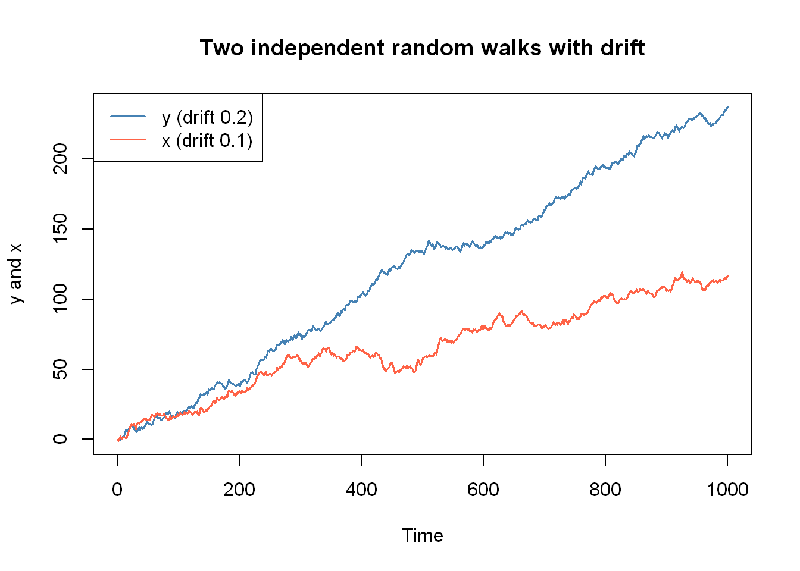
spurious_ols <- lm(y ~ x)
stargazer(spurious_ols, type = "text",
title = "Spurious Regression: unrelated random walks")
Spurious Regression: unrelated random walks
===============================================
Dependent variable:
---------------------------
y
-----------------------------------------------
x 2.157***
(0.017)
Constant -20.781***
(1.273)
-----------------------------------------------
Observations 1,000
R2 0.939
Adjusted R2 0.939
Residual Std. Error 17.314 (df = 998)
F Statistic 15,281.510*** (df = 1; 998)
===============================================
Note: *p<0.1; **p<0.05; ***p<0.01\(R^2 \approx 0.94\), \(t\)-stat on \(x\) is enormous — purely an artifact. The OLS estimator converges to \(\hat{\beta} \to \alpha_y / \alpha_x = 0.2/0.1 = 2\) as \(T \to \infty\), not to any meaningful parameter.
Takeaway: Always test for unit roots before running a regression with time series data.
4 Cointegration
4.1 What Cointegration Means
Two I(1) series \(y_t\) and \(x_t\) are cointegrated if there exists \(\beta\) such that:
\[y_t - \beta x_t \sim I(0)\]
The linear combination is stationary even though both series individually wander. Economically, this means the two series share a common stochastic trend — they can deviate in the short run but cannot drift apart permanently.
Engle-Granger two-step procedure:
- Regress \(y_t\) on \(x_t\) (the cointegrating regression)
- Test the residuals \(\hat{u}_t\) for a unit root using ADF or PP
If residuals are stationary → cointegration. Critical values are more negative than standard ADF critical values (non-standard, depends on number of variables).
4.2 Test: Independent Random Walks (Non-Cointegrated)
# Residuals from spurious regression
options(repr.plot.width = 6, repr.plot.height = 6, repr.plot.res = 150)
ts.plot(residuals(spurious_ols),
ylab = "Residuals",
main = "Residuals from spurious regression (should look like RW)")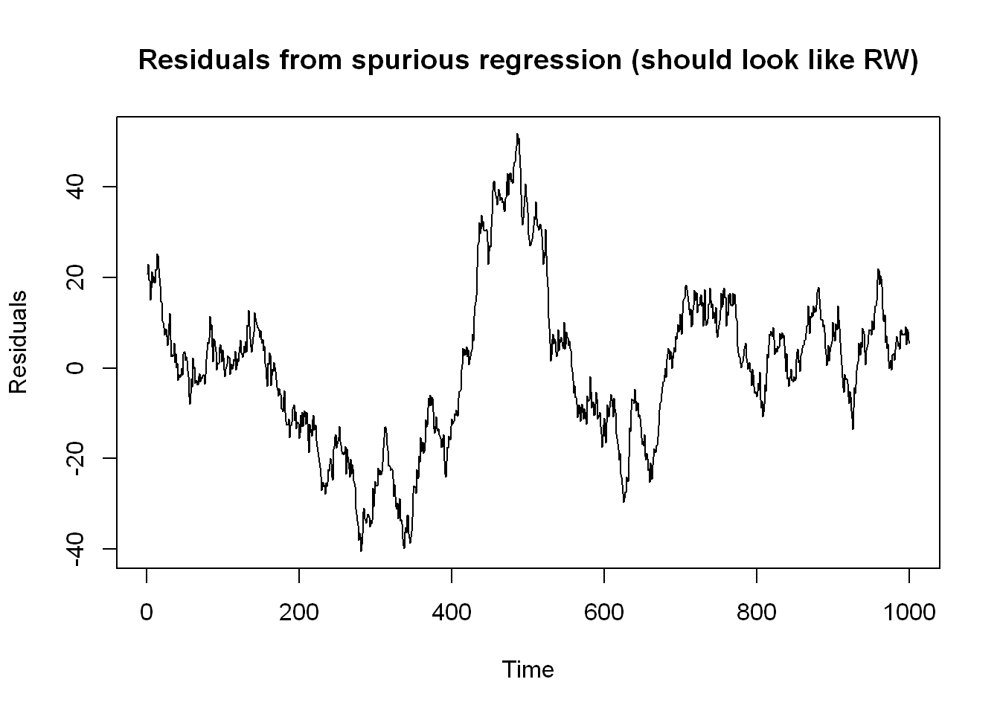
pp.test(residuals(spurious_ols))
Phillips-Perron Unit Root Test
data: residuals(spurious_ols)
Dickey-Fuller Z(alpha) = -12.13, Truncation lag parameter = 7, p-value
= 0.4331
alternative hypothesis: stationarybfx <- as.matrix(cbind(y, x), demean = FALSE)
po.test(bfx)
Phillips-Ouliaris Cointegration Test
data: bfx
Phillips-Ouliaris demeaned = -11.356, Truncation lag parameter = 9,
p-value = 0.15Both tests fail to reject the null of no cointegration — as expected, since \(y\) and \(x\) are independent.
4.3 Test: US Interest Rates (Cointegrated)
The Fed funds rate (ffr) and 3-year T-note (r3) both appear to be I(1). Economic theory (expectations hypothesis of the term structure) suggests they should share a common stochastic trend — short and medium rates are both anchored to expectations of future monetary policy.
options(repr.plot.width = 6, repr.plot.height = 6, repr.plot.res = 150)
plot(merge(as.zoo(r3), as.zoo(ffr)),
plot.type = "single",
col = c("black", "red"),
lwd = c(1, 1),
lty = c(1, 1),
xlab = "Date",
ylab = "Percent per annum",
main = "Interest Rates")
legend("topright",
legend = c("3y Note", "Fed Funds"),
col = c("black", "red"),
lwd = c(1, 1),
lty = c(1, 1))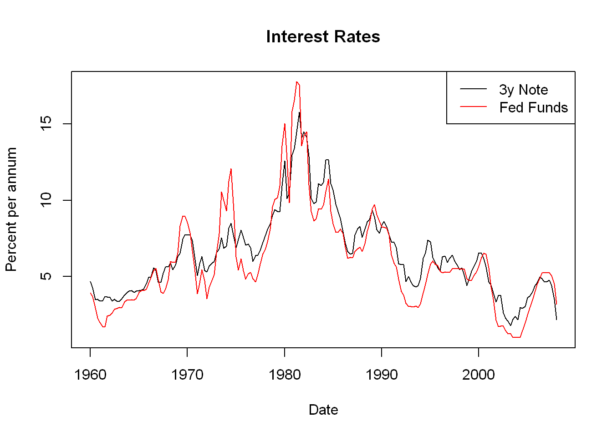
# Step 1: cointegrating regression
fb_coint <- dynlm(r3 ~ ffr)
# Step 2: plot and test residuals
options(repr.plot.width = 6, repr.plot.height = 6, repr.plot.res = 150)
ts.plot(residuals(fb_coint),
ylab = "Residuals",
main = "Residuals: regression 3yr TSY Note Yield ~ Fed Funds Rate")
abline(h = 0, col = "grey50", lty = 2)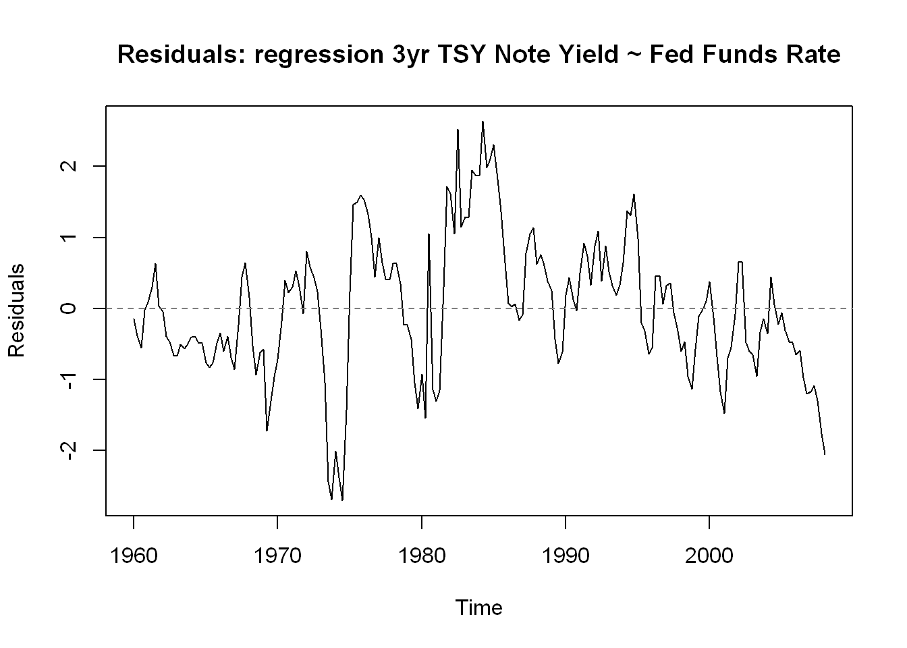
pp.test(residuals(fb_coint))
Phillips-Perron Unit Root Test
data: residuals(fb_coint)
Dickey-Fuller Z(alpha) = -33.736, Truncation lag parameter = 4, p-value
= 0.01
alternative hypothesis: stationarybfx2 <- as.matrix(cbind(r3, ffr), demean = FALSE)
po.test(bfx2)
Phillips-Ouliaris Cointegration Test
data: bfx2
Phillips-Ouliaris demeaned = -31.137, Truncation lag parameter = 1,
p-value = 0.01Both tests reject the null of no cointegration. The two rates are cointegrated — they share a common stochastic trend, consistent with the expectations hypothesis.
5 Univariate Time Series: ARIMA
5.1 ACF and PACF: Reading the Correlogram
Before fitting an ARIMA model, we use the autocorrelation function (ACF) and partial autocorrelation function (PACF) to identify plausible model orders. The identification table from the lecture:
| Model | ACF | PACF |
|---|---|---|
| AR(\(p\)) | Decays geometrically | Cuts off sharply at lag \(p\) |
| MA(\(q\)) | Cuts off sharply at lag \(q\) | Decays geometrically |
| ARMA(\(p,q\)) | Decays after lag \(q\) | Decays after lag \(p\) |
| I(1) (unit root) | Barely decays, near 1 | Large spike at lag 1 only |
| White noise | All near zero | All near zero |
In practice, ACF/PACF patterns are rarely textbook-clean. Use them as a starting point for candidate models, then select using AIC/BIC.
5.2 Non-Seasonal ARIMA: US 3-Year T-Note Rate
Step 1 — Confirm integration order
We established in Section 1.5 that r3 (the 3-year T-note) is I(1). We fit ARIMA(\(p\), 1, \(q\)) models directly to the series in levels, letting Arima() handle the differencing internally via d = 1.
# ACF and PACF of the first difference to identify p and q
dr3 <- diff(r3)
options(repr.plot.width = 6, repr.plot.height = 6, repr.plot.res = 150)
par(mfrow = c(1, 1))
acf(dr3, main = "Sample Autocorrelation for r3 Data", lag.max = 20)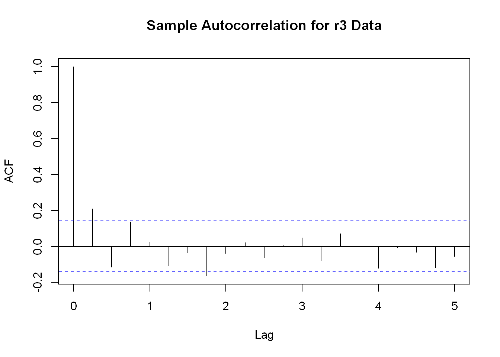
par(mfrow = c(1, 1))
pacf(dr3, main = "Sample Partial Autocorrelation for r3 Data", lag.max = 20)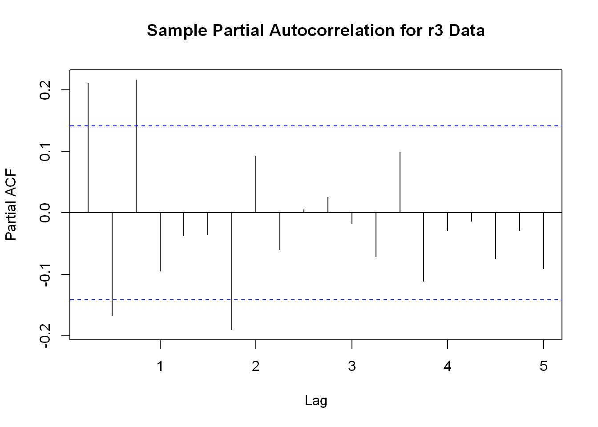
Reading the plots:
- ACF: significant negative spike at lag 1 with rapid decay — consistent with an MA(1) component, though the pattern is not definitive
- PACF: significant spikes at lags 1 through 4, decaying gradually — suggests AR terms up to order 4 may be needed; this also hints that a pure MA(1) may leave some structure in the residuals
- Candidate models: ARIMA(1,1,0), ARIMA(0,1,1), ARIMA(1,1,1), ARIMA(4,1,0)
Step 2 — Estimate candidates and compare
# r3 as a ts object (already quarterly from data load)
r3_ts <- r3
m_ar1 <- Arima(r3_ts, order = c(1, 1, 0))
m_ma1 <- Arima(r3_ts, order = c(0, 1, 1))
m_arma <- Arima(r3_ts, order = c(1, 1, 1))
m_ar4 <- Arima(r3_ts, order = c(4, 1, 0))
ic_table <- data.frame(
Model = c("ARIMA(1,1,0)", "ARIMA(0,1,1)", "ARIMA(1,1,1)", "ARIMA(4,1,0)"),
AIC = round(c(AIC(m_ar1), AIC(m_ma1), AIC(m_arma), AIC(m_ar4)), 2),
BIC = round(c(BIC(m_ar1), BIC(m_ma1), BIC(m_arma), BIC(m_ar4)), 2),
LogLik = round(c(logLik(m_ar1), logLik(m_ma1), logLik(m_arma), logLik(m_ar4)), 2)
)
knitr::kable(ic_table, caption = "ARIMA model comparison: US 3-Year T-Note Rate")| Model | AIC | BIC | LogLik |
|---|---|---|---|
| ARIMA(1,1,0) | 378.16 | 384.67 | -187.08 |
| ARIMA(0,1,1) | 372.49 | 379.00 | -184.24 |
| ARIMA(1,1,1) | 369.65 | 379.42 | -181.83 |
| ARIMA(4,1,0) | 367.84 | 384.12 | -178.92 |
ARIMA(0,1,1) wins on BIC (379.00) among the four candidates and is the most parsimonious. ARIMA(4,1,0) has the lowest AIC (367.84) but its BIC (384.12) is the highest of the group, penalising the four AR parameters heavily. ARIMA(1,1,1) splits the difference but neither dominates.
As a benchmark, auto.arima with an exhaustive search selects:
m_auto <- auto.arima(r3_ts, d = 1, stepwise = FALSE, approximation = FALSE)
cat("auto.arima selection:\n")auto.arima selection:print(m_auto)Series: r3_ts
ARIMA(3,1,2)
Coefficients:
ar1 ar2 ar3 ma1 ma2
-0.8705 -0.5899 0.1673 1.1984 0.7535
s.e. 0.1288 0.1017 0.1054 0.1113 0.1044
sigma^2 = 0.3753: log likelihood = -176.09
AIC=364.19 AICc=364.64 BIC=383.73auto.arima selects ARIMA(3,1,2) with AIC = 364.19 — lower than all four hand-specified candidates — but its BIC (383.73) exceeds ARIMA(0,1,1)’s BIC of 379.00, because the five-parameter model incurs a heavy parsimony penalty.
Step 3 — Diagnostics
best_model <- m_auto # ARIMA(3,1,2)
options(repr.plot.width = 8, repr.plot.height = 8, repr.plot.res = 150)
checkresiduals(best_model)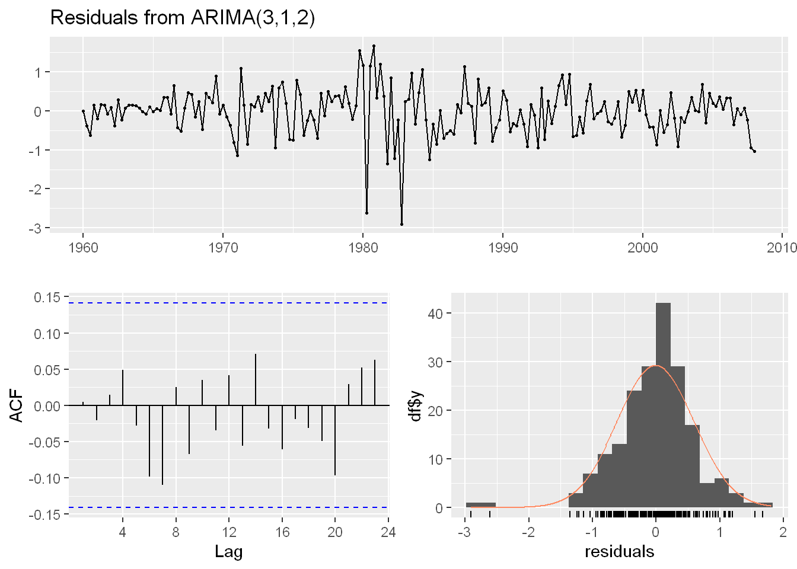
Ljung-Box test
data: Residuals from ARIMA(3,1,2)
Q* = 5.2862, df = 3, p-value = 0.152
Model df: 5. Total lags used: 8# Ljung-Box at multiple lags (fitdf = 1 for the one MA parameter)
lb_tests <- sapply(c(8, 12, 16), function(lag) {
Box.test(residuals(best_model), lag = lag, type = "Ljung-Box",
fitdf = sum(best_model$arma[1:2]))$p.value
})
knitr::kable(
data.frame(Lag = c(8, 12, 16), p_value = round(lb_tests, 4)),
caption = "Ljung-Box test p-values — ARIMA(3,1,2) residuals (H₀: white noise)"
)| Lag | p_value |
|---|---|
| 8 | 0.1520 |
| 12 | 0.4200 |
| 16 | 0.5507 |
P-values are above 0.05 at all tested lags, indicating no residual serial correlation.
Step 4 — Forecast
options(repr.plot.width = 6, repr.plot.height = 6, repr.plot.res = 150)
fc <- forecast(best_model, h = 8)
plot(fc,
main = "8-Quarter Ahead Forecast: US 3-Year T-Note Rate",
ylab = "Percent per annum",
xlab = "Date",
fcol = "tomato",
flcol = "lightsalmon")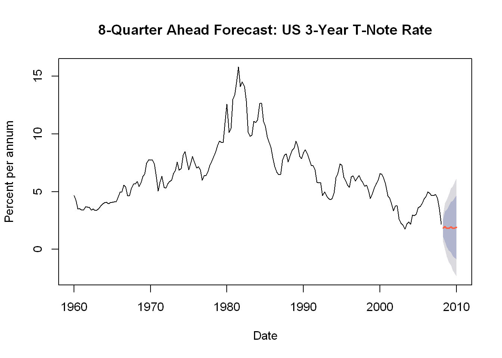
5.3 Seasonal ARIMA: AirPassengers
The AirPassengers dataset (Box & Jenkins 1976) records monthly international airline passengers from 1949 to 1960. It is the canonical seasonal time series example.
5.3.1 Exploration
data("AirPassengers")
options(repr.plot.width = 6, repr.plot.height = 6, repr.plot.res = 150)
plot(AirPassengers,
main = "Monthly International Airline Passengers (1949–1960)",
ylab = "Passengers (thousands)",
xlab = "Year")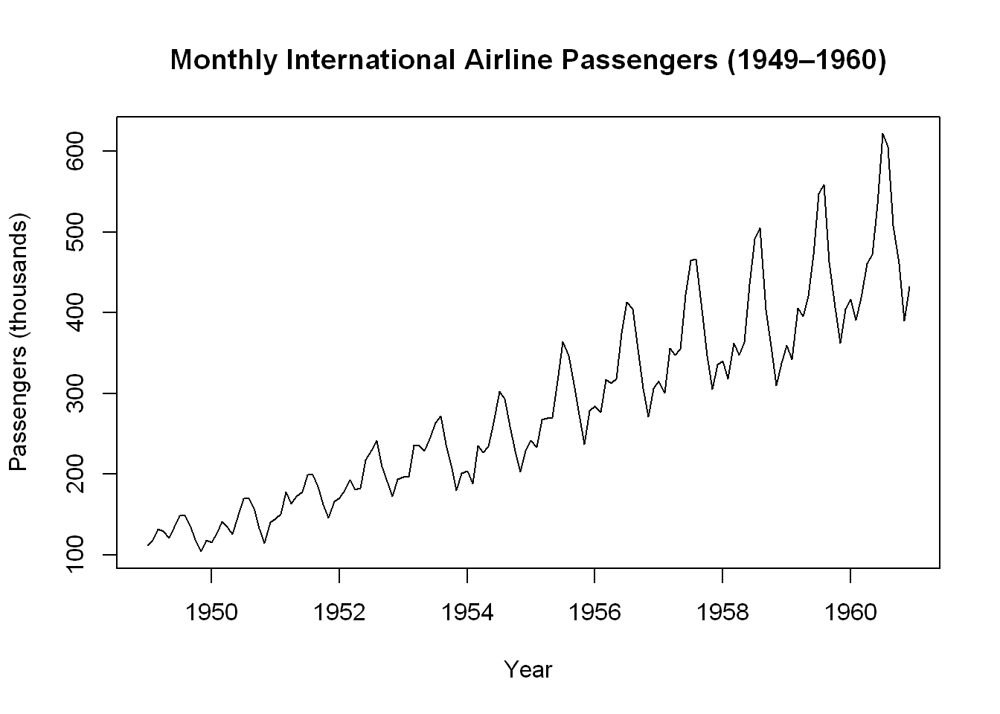
Two problems are immediately visible:
- Trend: passengers grow over time → need differencing or log transformation
- Multiplicative seasonality: the seasonal swings grow proportionally with the level → log transformation stabilises variance
options(repr.plot.width = 6, repr.plot.height = 6, repr.plot.res = 150)
lnAP <- log(AirPassengers)
plot(lnAP, main = "log(AirPassengers)", ylab = "log(Passengers)", xlab = "Year")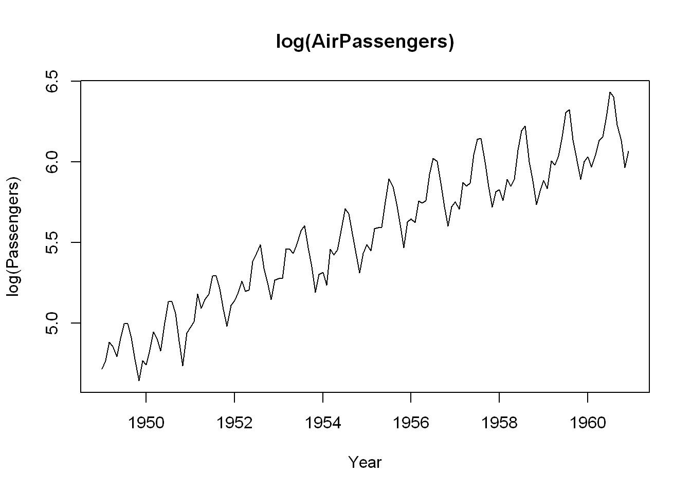
5.3.2 Identification
# Check ACF/PACF of log series in levels
options(repr.plot.width = 6, repr.plot.height = 6, repr.plot.res = 150)
acf(lnAP, lag.max = 36, main = "ACF: log(AP) in levels")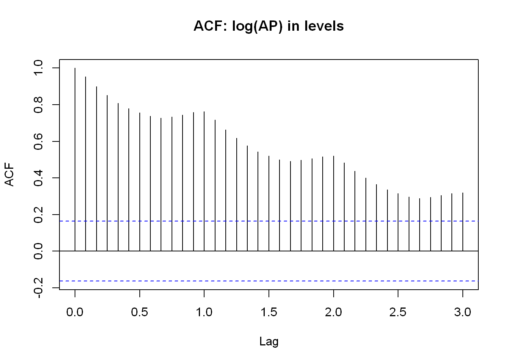
pacf(lnAP, lag.max = 36, main = "PACF: log(AP) in levels")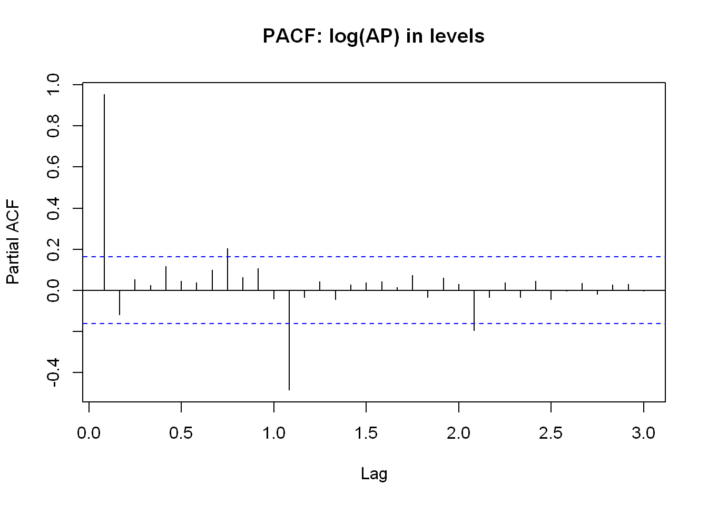
The slow ACF decay confirms I(1). The spikes at lags 12, 24 in the ACF confirm seasonal I(1) as well.
# Apply regular + seasonal differencing
d12_lnAP <- diff(diff(lnAP, lag = 12)) # seasonal diff first, then regular diff
options(repr.plot.width = 6, repr.plot.height = 6, repr.plot.res = 150)
acf(d12_lnAP, lag.max = 36, main = "ACF:log(AP)")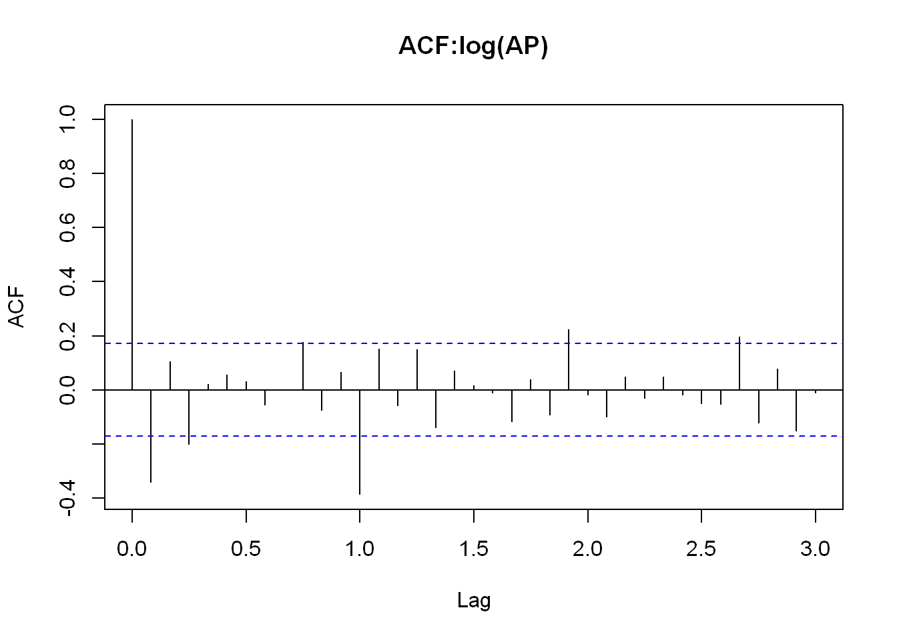
pacf(d12_lnAP, lag.max = 36, main = "PACF:log(AP)")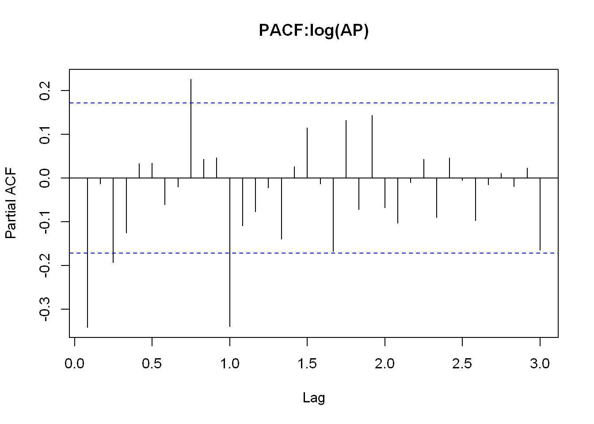
After both regular and seasonal differencing:
- ACF: negative spike at lag 12 (MA(1) seasonal term)
- Suggested model: SARIMA(0,1,1)(0,1,1)[12] — the classic “airline model”
5.3.3 Estimation
# The classic airline model
m_sarima <- Arima(lnAP,
order = c(0, 1, 1),
seasonal = list(order = c(0, 1, 1), period = 12))
summary(m_sarima)Series: lnAP
ARIMA(0,1,1)(0,1,1)[12]
Coefficients:
ma1 sma1
-0.4018 -0.5569
s.e. 0.0896 0.0731
sigma^2 = 0.001371: log likelihood = 244.7
AIC=-483.4 AICc=-483.21 BIC=-474.77
Training set error measures:
ME RMSE MAE MPE MAPE MASE
Training set 0.0005730622 0.03504883 0.02626034 0.01098898 0.4752815 0.2169522
ACF1
Training set 0.01443892# auto.arima for comparison
m_auto_sarima <- auto.arima(lnAP, stepwise = FALSE, approximation = FALSE)
cat("\nauto.arima selection:\n")
auto.arima selection:print(m_auto_sarima)Series: lnAP
ARIMA(0,1,1)(0,1,1)[12]
Coefficients:
ma1 sma1
-0.4018 -0.5569
s.e. 0.0896 0.0731
sigma^2 = 0.001371: log likelihood = 244.7
AIC=-483.4 AICc=-483.21 BIC=-474.775.3.4 Diagnostics
options(repr.plot.width = 8, repr.plot.height = 8, repr.plot.res = 150)
checkresiduals(m_sarima)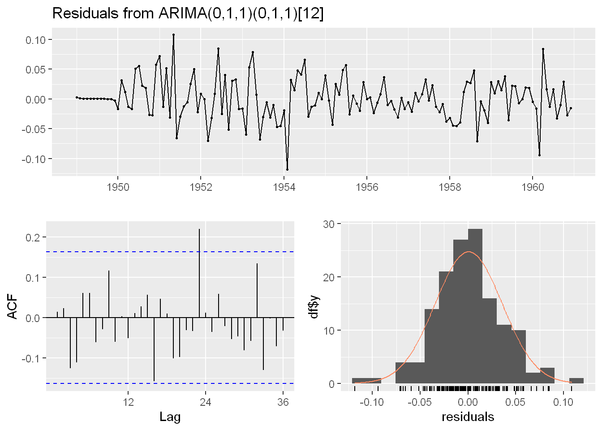
Ljung-Box test
data: Residuals from ARIMA(0,1,1)(0,1,1)[12]
Q* = 26.446, df = 22, p-value = 0.233
Model df: 2. Total lags used: 24# Ljung-Box
lb_sarima <- sapply(c(12, 24, 36), function(lag) {
Box.test(residuals(m_sarima), lag = lag, type = "Ljung-Box",
fitdf = 2)$p.value # 2 estimated parameters (theta, Theta)
})
knitr::kable(data.frame(Lag = c(12, 24, 36), p_value = round(lb_sarima, 4)),
caption = "Ljung-Box: SARIMA(0,1,1)(0,1,1)[12] residuals")| Lag | p_value |
|---|---|
| 12 | 0.5101 |
| 24 | 0.2330 |
| 36 | 0.2969 |
5.3.5 Forecast
options(repr.plot.width = 6, repr.plot.height = 6, repr.plot.res = 150)
fc_sarima <- forecast(m_sarima, h = 24)
plot(fc_sarima,
main = "24-Month Forecast: International Airline Passengers",
ylab = "log(Passengers)",
xlab = "Year",
fcol = "tomato",
flcol = "lightsalmon")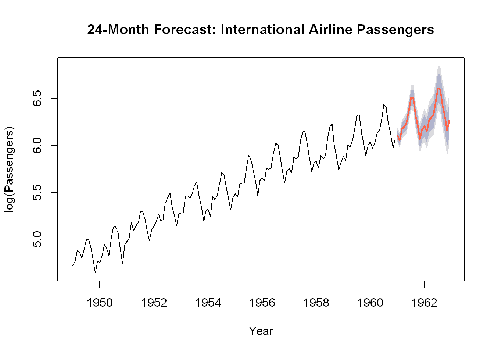
# Plot on original scale
fc_orig <- fc_sarima
fc_orig$mean <- exp(fc_sarima$mean)
fc_orig$lower <- exp(fc_sarima$lower)
fc_orig$upper <- exp(fc_sarima$upper)
fc_orig$x <- AirPassengers
options(repr.plot.width = 6, repr.plot.height = 6, repr.plot.res = 150)
plot(fc_orig,
main = "24-Month Forecast: International Airline Passengers (original scale)",
ylab = "Passengers (thousands)",
xlab = "Year",
fcol = "tomato",
flcol = "lightsalmon")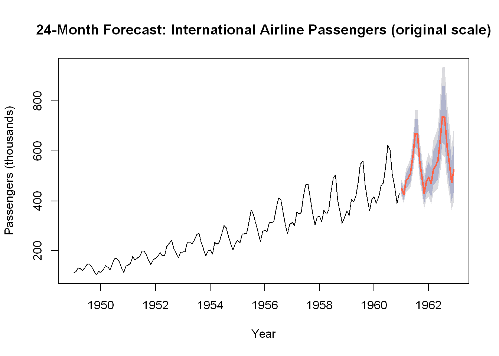
The model captures both the upward trend and the seasonal pattern, and the forecast intervals widen appropriately at longer horizons.
6 Dynamic Panels: Arellano-Bond (Bonus)
When the panel model itself includes a lagged dependent variable:
\[y_{it} = \rho y_{i,t-1} + \mathbf{x}_{it}'\boldsymbol{\beta} + \mu_i + \varepsilon_{it}\]
the within (FE) transformation does not solve endogeneity because \(y_{i,t-1} - \bar{y}_i\) remains correlated with the demeaned error. Arellano-Bond (1991) addresses this with first-differencing to eliminate \(\mu_i\), then using deeper lags of \(y_{it}\) as GMM instruments for the differenced lagged variable.
We illustrate using the EmplUK dataset (Arellano-Bond’s original application): employment dynamics for 140 UK firms, 1976–1984.
data("EmplUK", package = "plm")
str(EmplUK)'data.frame': 1031 obs. of 7 variables:
$ firm : num 1 1 1 1 1 1 1 2 2 2 ...
$ year : num 1977 1978 1979 1980 1981 ...
$ sector : num 7 7 7 7 7 7 7 7 7 7 ...
$ emp : num 5.04 5.6 5.01 4.72 4.09 ...
$ wage : num 13.2 12.3 12.8 13.8 14.3 ...
$ capital: num 0.589 0.632 0.677 0.617 0.508 ...
$ output : num 95.7 97.4 99.6 100.6 99.6 ...6.0.1 Check for serial correlation in FE residuals
formula_emp <- log(emp) ~ log(wage) + log(capital) + log(output)
pwartest(formula_emp, data = EmplUK)
Wooldridge's test for serial correlation in FE panels
data: plm.model
F = 248.87, df1 = 1, df2 = 889, p-value < 2.2e-16
alternative hypothesis: serial correlationStrong rejection of no serial correlation → standard FE standard errors are misleading, and a dynamic specification may be warranted.
6.0.2 Static two-way FE (baseline)
fe_static <- plm(formula_emp,
index = c("firm", "year"),
model = "within",
effect = "twoways",
data = EmplUK)
summary(fe_static)Twoways effects Within Model
Call:
plm(formula = formula_emp, data = EmplUK, effect = "twoways",
model = "within", index = c("firm", "year"))
Unbalanced Panel: n = 140, T = 7-9, N = 1031
Residuals:
Min. 1st Qu. Median 3rd Qu. Max.
-0.54207146 -0.06968774 0.00071644 0.06986551 0.59598998
Coefficients:
Estimate Std. Error t-value Pr(>|t|)
log(wage) -0.296877 0.055347 -5.3639 1.042e-07 ***
log(capital) 0.547560 0.021773 25.1482 < 2.2e-16 ***
log(output) 0.264825 0.081999 3.2296 0.001286 **
---
Signif. codes: 0 '***' 0.001 '**' 0.01 '*' 0.05 '.' 0.1 ' ' 1
Total Sum of Squares: 26.47
Residual Sum of Squares: 14.347
R-Squared: 0.45798
Adj. R-Squared: 0.36558
F-statistic: 247.848 on 3 and 880 DF, p-value: < 2.22e-166.0.3 Arellano-Bond GMM (AR(2) dynamic model)
ab_gmm <- pgmm(
log(emp) ~ lag(log(emp), 1:2) + lag(log(wage), 0:1)
+ log(capital) + lag(log(output), 0:1)
| lag(log(emp), 2:99),
data = EmplUK,
effect = "twoways",
model = "twosteps"
)
summary(ab_gmm)Twoways effects Two-steps model Difference GMM
Call:
pgmm(formula = log(emp) ~ lag(log(emp), 1:2) + lag(log(wage),
0:1) + log(capital) + lag(log(output), 0:1) | lag(log(emp),
2:99), data = EmplUK, effect = "twoways", model = "twosteps")
Unbalanced Panel: n = 140, T = 7-9, N = 1031
Number of Observations Used: 611
Residuals:
Min. 1st Qu. Median Mean 3rd Qu. Max.
-0.6190677 -0.0255683 0.0000000 -0.0001339 0.0332013 0.6410272
Coefficients:
Estimate Std. Error z-value Pr(>|z|)
lag(log(emp), 1:2)1 0.474151 0.185398 2.5575 0.0105437 *
lag(log(emp), 1:2)2 -0.052967 0.051749 -1.0235 0.3060506
lag(log(wage), 0:1)0 -0.513205 0.145565 -3.5256 0.0004225 ***
lag(log(wage), 0:1)1 0.224640 0.141950 1.5825 0.1135279
log(capital) 0.292723 0.062627 4.6741 2.953e-06 ***
lag(log(output), 0:1)0 0.609775 0.156263 3.9022 9.530e-05 ***
lag(log(output), 0:1)1 -0.446373 0.217302 -2.0542 0.0399605 *
---
Signif. codes: 0 '***' 0.001 '**' 0.01 '*' 0.05 '.' 0.1 ' ' 1
Sargan test: chisq(25) = 30.11247 (p-value = 0.22011)
Autocorrelation test (1): normal = -1.53845 (p-value = 0.12394)
Autocorrelation test (2): normal = -0.2796829 (p-value = 0.77972)
Wald test for coefficients: chisq(7) = 142.0353 (p-value = < 2.22e-16)
Wald test for time dummies: chisq(6) = 16.97046 (p-value = 0.0093924)# Autocorrelation tests (Arellano-Bond m-tests)
# AR(1) is expected in first-differenced residuals; AR(2) should NOT be present
mtest(ab_gmm, order = 1L, vcov = vcovHC)
Arellano-Bond autocorrelation test of degree 1, vcov: vcovHC
data: log(emp) ~ lag(log(emp), 1:2) + lag(log(wage), 0:1) + log(capital) + ...
normal = -1.5385, p-value = 0.1239
alternative hypothesis: autocorrelation presentmtest(ab_gmm, order = 2L, vcov = vcovHC)
Arellano-Bond autocorrelation test of degree 2, vcov: vcovHC
data: log(emp) ~ lag(log(emp), 1:2) + lag(log(wage), 0:1) + log(capital) + ...
normal = -0.27968, p-value = 0.7797
alternative hypothesis: autocorrelation presentKey diagnostics:
- Sargan-Hansen test: tests overidentifying restrictions. Failure to reject → instruments appear valid.
- AR(1) test: first-order autocorrelation in first-differenced residuals is expected by construction — not a problem.
- AR(2) test: second-order autocorrelation would invalidate the lag-2 instruments. We want to fail to reject here.
Important caveat: Arellano-Bond is sensitive to the choice of instrument lag range. Proliferating instruments (using too many lags) weakens the Sargan test and can bias GMM estimates. Always run robustness checks with different lag depths.
7 Summary and Key Takeaways
7.1 The Non-Stationarity Checklist
- Plot the series — does it trend? Does it mean-revert?
- Test for structural breaks (Quandt-Andrews/Bai-Perron) if suspected
- Run ADF (with trend if the series trends)
- Reject \(H_0\) → stationary, work in levels
- Fail to reject → proceed
- Determine type: stochastic vs deterministic trend
- Apply correct fix: difference I(1) series; detrend trend-stationary series
- If multiple I(1) series: test cointegration before differencing — you may throw away a real long-run relationship
7.2 ARIMA Box-Jenkins Workflow
| Stage | What to do |
|---|---|
| Identification | Plot, unit root test, determine \(d\); ACF/PACF for \(p\), \(q\) |
| Estimation | Estimate candidates via ML; compare AIC/BIC |
| Diagnostics | Ljung-Box on residuals; ACF/PACF of residuals |
| Forecasting | Generate forecasts + intervals; evaluate out-of-sample |
ARIMA selection is iterative, not linear: cycle back through identification and estimation if diagnostics fail.
8 Further Reading
Online resources:
- Colonescu, Principles of Econometrics with R: https://bookdown.org/ccolonescu/RPoE4/time-series-stationary-variables.html
- Hyndman & Athanasopoulos, Forecasting: Principles and Practice (free online): https://OTexts.com/fpp3
- Holmes, E. E., M. D. Scheuerell, and E. J. Ward. Applied time series analysis for fisheries and environmental data. Edition 2021. https://atsa-es.github.io/atsa-labs/
- Arellano & Bond (1991), original paper: https://doi.org/10.2307/2297968